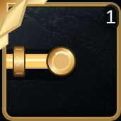
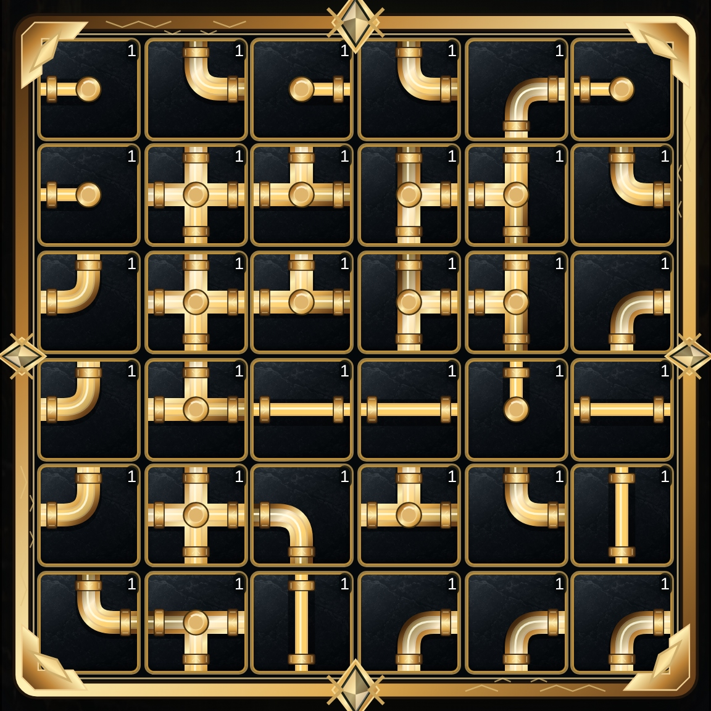

Son tasarımın gerçek ekran yakalamaları üzerinde efekt örnekleri. Bu sayfa oyun başlatmaz; kayıt, ödül ve reklam işlemi yapmaz. İşletim sistemindeki “hareketi azalt” ayarına uyar.

Mevcut ışık çizgisinde hafif parlama; ek hücre katmanı ve ölçek değişimi yok.

Tek çerçeve vurgusu; parçacık ve sürekli hareket yok.
4 px hafif giriş. Bu kart hareket örneğidir; gerçek ödül panelinin yerine geçmez.
Doğru hizalanan bağlantılarda mevcut ışık çizgisinin saydamlığı 160 ms içinde değişir. 7×7 ve 8×8’de bu geçiş statiktir. Gerçek kazanma, süre ve kayıt koruma kontrolleri test raporunda.
Üçlü ekran karşılaştırmasına dön